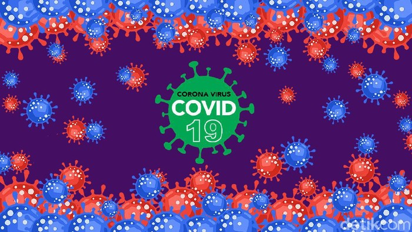

Pemerintah melaporkan penambahan kasus COVID-19 di Indonesia sebanyak 6.243 kasus hari ini. Total kasus positif virus Corona di RI sejak Maret 2020 hingga hari ini berjumlah 1.626.812.
Direktur Eksekutif Indonesian Public Institute (IPI), Karyono Wibowo menyatakan setahun terjadi Covid-19 namun belum ada tanda Covid-19 dapat dikendalikan.

Beberapa waktu lalu, para ilmuwan China dari Zhejiang University menemukan mutasi virus corona pada sekelompok kecil pasien yang sebelumnya tidak dilaporkan.

Peningkatan kasus virus corona Covid-19 masih berlangsung di berbagai penjuru dunia. Hingga awal April ini belum ditemukan vaksin yang tepat untuk menangkalnya.